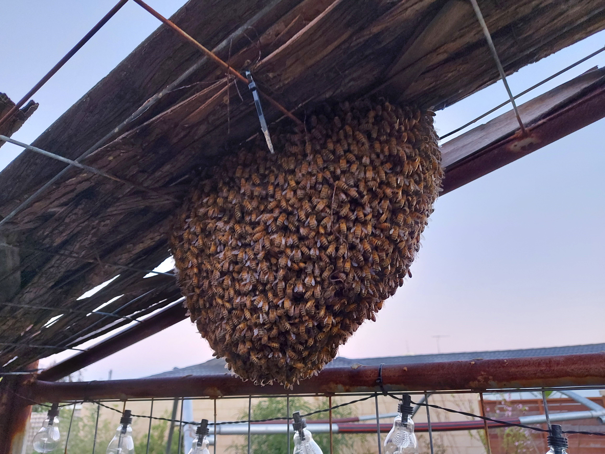
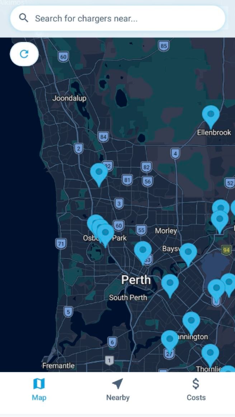

Work & Interests
Where the hands-on lives
Real projects, real results.

Apiculture
Perth metro hive management
Colony health, honey harvests, seasonal splits

Renovation
Residential project
Full scope from planning to handover

App development
ChargeSafe — map view
React Native, live charger data, Perth metro

Planning & Industry
AIMWA — Industry engagement
Planning, infrastructure, professional development

Renovation
On-site delivery
Detail work, hands-on